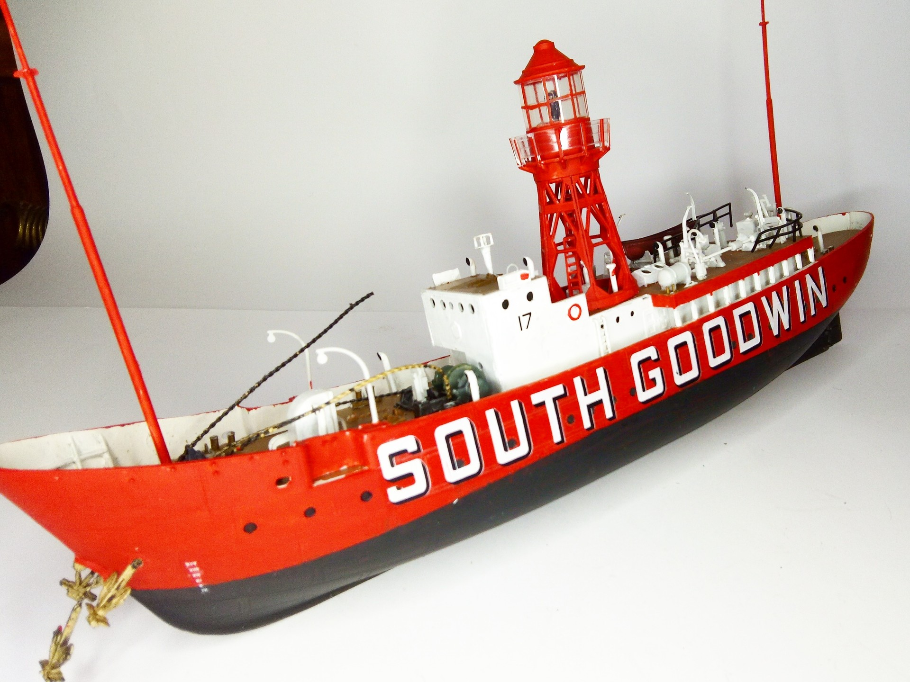
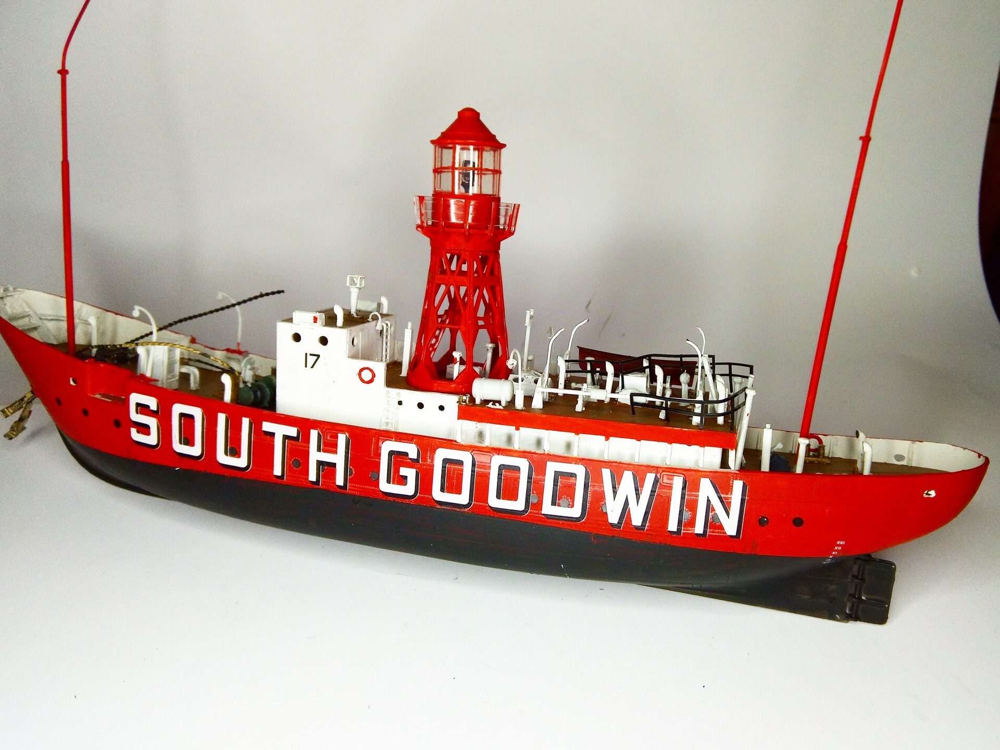

Navi · scale model archive
Trinity House Lightship "South Goodwin"
Trinity House Lightship "South Goodwin" — Kit: Revell #SouthGoodwin, Scale: 1/144 #. Built in 1953, sunk on 26/27th November 1954, more info on…

Photo gallery

English description
Built in 1953, sunk on 26/27th November 1954, more info on https://www.manstonhistory.org.uk/south-goodwin-lightship-disaster-2627th-november-1954/
#1/144 #Revell
Descrizione italiana
Costruita nel 1953 e affondata tra il 26 e il 27 novembre 1954. Maggiori informazioni: https://www.manstonhistory.org.uk/south-goodwin-lightship-disaster-2627th-november-1954/